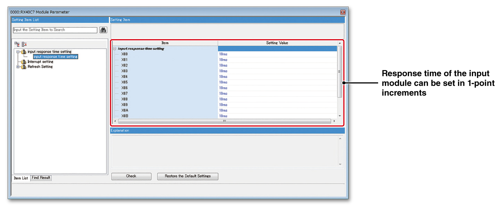
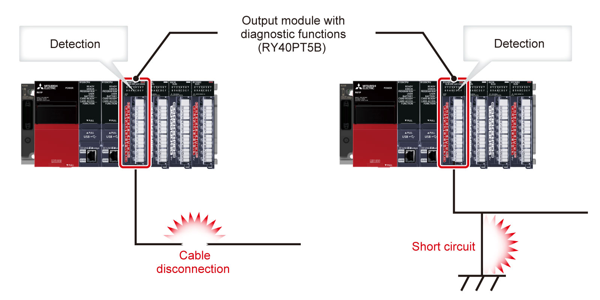

Controllers MELSEC iQ-R Series Product features -I/O-

Features
Response speed setting preventing unintended signal input<sup>Input</sup>
- Setting in 1-point increments
- Prevent unintended input
- The response time of the input module can be changed from the engineering software GX Works3 in 1-point increments depending on the quality of the incoming signal
- The setting reference for input response time is explained below
- For unstable signals such as relay contacts and switches, set a longer response time to stabilize the signals
- For stable signals such as transistor outputs, set a shorter response time to enable high-speed inputs

Cable disconnection/short-circuit detection using diagnostic functions<sup>RX40NC6BRY40PT5B</sup>
- Disconnection detection
- Output short-circuit detection
- Cable disconnections can be detected by either the “input disconnection detection function” or “output disconnection detection function”
- Output overcurrent due to short circuit can be detected by the “output short-circuit detection function”
- “Output disconnection detection disable time setting” disables the disconnection detection function for a predetermined period of time after the turning on of the output. This reduces the false disconnection detection because the result of detection is not affected by the back EMF just after the output

Relay health diagnostics for preventive maintenance<sup>RY18R2ARY10R2-TSRY10R2RY40PT5B</sup>
- Preventive maintenance
- Utilizing data, such as from embedded relay contacts in the relay output module or from relays connected externally to the transistor output module (with diagnostic functions), preventive maintenance can be carried out based on the known service of the relay